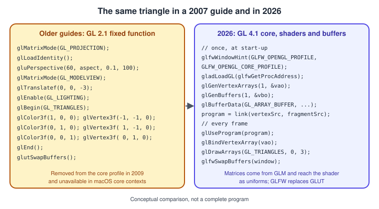
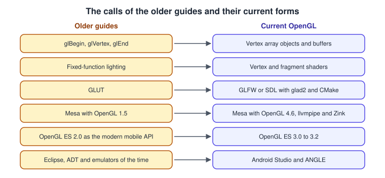
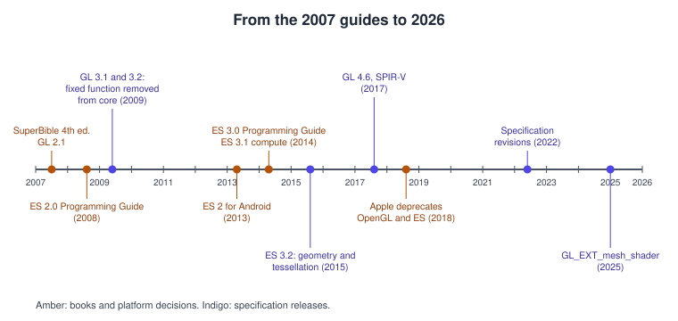
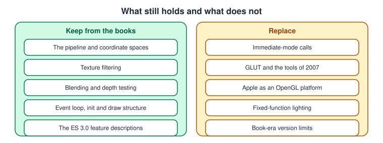

What Has Changed Since the Older OpenGL Guides
|
This content was generated with the assistance of AI and should be verified against the official documentation before being relied on in production. |
Most of what the classic OpenGL books teach about the ideas is still right: the pipeline, the transformation chain, textures, blending, depth testing and the structure of a shader have not changed. What has changed is the vocabulary of the API calls, the tools used to build and debug a program, and the platforms that run it. This page lists, book by book, the statements that are out of date and what to do today, so that you can keep reading the books for their ideas and use this sub-section for current practice. The facts were checked in November 2026 against desktop OpenGL 4.6 with GLSL 4.60, OpenGL ES 3.2 with GLSL ES 3.20 and EGL 1.5. For the changes that affect all graphics libraries, not only OpenGL, see What Has Changed Since the Older Guides.
The books are listed in the section bibliography and have the short names used in the tables: SB4 (OpenGL SuperBible, 4th edition, 2007), ES2PG (OpenGL ES 2.0 Programming Guide, 2008), ES3PG (OpenGL ES 3.0 Programming Guide, 2nd edition, 2014), GLSL150 (The OpenGL Shading Language, Version 1.50, 2009), BRO (OpenGL ES 2 for Android, 2013), MAR (Game and Graphics Programming for iOS and Android with OpenGL ES 2.0, 2012) and APU (the Spanish course notes Apuntes de OpenGL y GLUT).

The left panel is the style of the first fourteen chapters of SB4; the right panel is the structure of Hello Triangle. Nothing in the left panel compiles against a macOS core context or against OpenGL ES 2.0 and later.
The corrections, book by book
SB4: OpenGL SuperBible, 4th edition (2007)
| Chapters | What the book says | What is current | Date | Read more |
|---|---|---|---|---|
Part I, 1 to 14 |
Geometry is drawn in immediate mode with |
Removed from the core profile in OpenGL 3.1 and 3.2, and not available in macOS core contexts. Use OpenGL 4.6 core (4.1 on macOS) with shaders, vertex array objects and a maths library such as GLM. |
2009 |
Hello Triangle, Coordinate Systems and Transforms, Lighting with Blinn-Phong |
Introduction and 15 |
OpenGL 2.1 is called the latest version. |
The latest version is 4.6, first released in 2017; the specification text was last revised on 5 May 2022. No 4.7 or 5.0 exists. |
2017 (revision 2022) |
|
2 |
The examples use GLUT for the window and the event loop, and the tools are those of the 2007 desktop. |
GLUT is no longer maintained. Use GLFW or SDL with a loader generated by glad2, built with CMake. |
Since the 2010s |
Getting Started on the Desktop, Contexts, Windows and Loaders |
12 |
Picking uses the selection and feedback render modes. |
Both modes left the core profile with the fixed-function pipeline. Pick with an ID buffer or by casting a ray into the scene. |
2009 |
|
20 |
Apple’s window-system glue is AGL and |
OpenGL has been deprecated on macOS since 10.14 and is capped at version 4.1 core; Metal is the native API. |
2018 |
|
21 |
Mesa supports only OpenGL 1.5. |
Mesa provides OpenGL 4.6 through hardware drivers, the llvmpipe software renderer and Zink on top of Vulkan. |
Since the 2010s |
|
22 |
The OpenGL ES section predates ES 3.x. |
OpenGL ES 3.2 is the last version; ES 1.x is deprecated. |
2015 |
ES2PG: OpenGL ES 2.0 Programming Guide (2008)
| Chapters | What the book says | What is current | Date | Read more |
|---|---|---|---|---|
1 and 15 |
Development uses the PowerVR and AMD OpenGL ES 2.0 emulators with Visual Studio 2005. |
Use ANGLE, the native EGL implementation of your platform, or a desktop context with |
Since 2010 |
|
Whole book |
OpenGL ES 2.0 is the modern mobile API; features such as vertex array objects, instancing, multiple render targets, uniform buffers and integer textures are absent. |
ES 3.0 added them in 2012, and ES 3.0 to 3.2 are available on current Android (API levels 18, 21 and 24 and later). |
2012 to 2015 |
ES3PG: OpenGL ES 3.0 Programming Guide, 2nd edition (2014)
| Chapters | What the book says | What is current | Date | Read more |
|---|---|---|---|---|
Whole book |
OpenGL ES 3.0 has no compute shaders, shader storage buffers, geometry or tessellation stages. |
Compute shaders and shader storage buffers arrived in ES 3.1 (2014); geometry and tessellation shaders in ES 3.2 (2015). |
2014 and 2015 |
Compute Shaders, Geometry and Tessellation Shaders, Uniforms, UBOs and SSBOs |
16 |
The Android and iOS chapter builds for Android 4.3 and iOS 7. |
OpenGL ES has been deprecated on iOS since iOS 12; Android is moving towards ANGLE as the only way to reach ES and recommends Vulkan for new projects. |
2018 onwards |
GLSL150: The OpenGL Shading Language, version 1.50 (2009)
| Sections | What the specification says | What is current | Date | Read more |
|---|---|---|---|---|
Whole document |
There is no |
GLSL 4.60 adds explicit locations and bindings, shader storage blocks, compute and SPIR-V (core since OpenGL 4.6, through |
2009 to 2017 |
BRO: OpenGL ES 2 for Android (2013)
| Chapters | What the book says | What is current | Date | Read more |
|---|---|---|---|---|
1 |
Development uses Eclipse with the Android Development Tools, and the emulator uses the host GPU. |
Android Studio and Gradle replace Eclipse and ADT, which were discontinued. Use a device or the current emulator. |
2015 |
|
Whole book |
The code is Java for ES 2.0 with |
|
2012 onwards |
MAR: Game and Graphics Programming for iOS and Android with OpenGL ES 2.0 (2012)
| Chapters | What the book says | What is current | Date | Read more |
|---|---|---|---|---|
1 |
The SDK is based on the SIO2 engine, with an Xcode 4-era project and the Android NDK used through Java glue code. |
SIO2 is defunct. On iOS use Metal, or ANGLE if you must keep GL code. On Android use the current NDK with CMake. |
2018 onwards |
|
Whole book |
ES 2.0 is the target for games on both platforms. |
ES 3.0 to 3.2 are universal on current Android; the game-related chapters map to the pages on skinning, text and input, and the general physics and audio page. |
2012 onwards |
Skeletal Animation and Skinning, Text, UI and Input, Physics, Audio and Input Basics |
APU: Apuntes de OpenGL y GLUT (course notes)
| Parts | What the notes say | What is current | Date | Read more |
|---|---|---|---|---|
All |
The notes use OpenGL 1.x fixed function, GLUT for the window and Visual C++ 6.0 as the compiler. |
Use OpenGL 4.1 or 4.6 core with GLFW or SDL and glad2, built with CMake and any current compiler. |
Since 2009 |


What to keep from the books
-
The explanations of the pipeline, of coordinate spaces, of texture filtering, of blending and of depth testing remain correct; only the function names around them have changed.
-
The structure of the book projects (an event loop, an initialisation function, a draw function) still maps to the render loop of Getting Started on the Desktop.
-
The ES guides are still the best long-form description of the ES 3.0 feature set; combine them with the pages on GLSL ES and Shader Portability and Debugging and Tools for current tooling.
-
Where a book and the Khronos reference pages disagree, follow the reference pages.

See also
-
OpenGL for the sub-section overview and its coverage map.
-
Versions, Profiles and Extensions for the complete version history.
-
Porting from OpenGL to Vulkan, Metal and WebGPU for the next step after the ES and GL books.
References
-
OpenGL registry: https://registry.khronos.org/OpenGL/index_gl.php
-
OpenGL ES registry: https://registry.khronos.org/OpenGL/index_es.php
-
GLSL 4.60 specification: https://registry.khronos.org/OpenGL/specs/gl/GLSLangSpec.4.60.html
-
GLSL 1.50 specification: https://registry.khronos.org/OpenGL/specs/gl/GLSLangSpec.1.50.pdf
-
Apple, migrating OpenGL code to Metal: https://developer.apple.com/documentation/metal/migrating-opengl-code-to-metal
-
Android OpenGL ES guide: https://developer.android.com/develop/ui/views/graphics/opengl/about-opengl
-
Mesa Zink: https://docs.mesa3d.org/drivers/zink.html
-
The books listed in the section bibliography